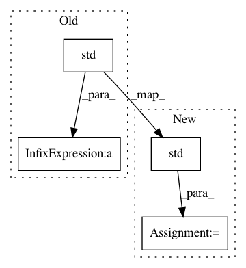

b6196e115a16409003649c4080a59037c2b679f1,mlxtend/preprocessing/scaling.py,,standardize,#,54
Before Change
else:
raise AttributeError("Input array must be a pandas DataFrame or NumPy array")
ary_newt[:, columns] = (ary_newt[:, columns] - ary_newt[:, columns].mean(axis=0)) /\
ary_newt[:, columns].std(axis=0, ddof=ddof)
return ary_newt[:, columns]
After Change
"DataFrame or NumPy array")
numerator = ary_newt[:, columns] - ary_newt[:, columns].mean(axis=0)
denominator = ary_newt[:, columns].std(axis=0, ddof=ddof)
ary_newt[:, columns] = numerator / denominator
return ary_newt[:, columns]
In pattern: SUPERPATTERN
Frequency: 3
Non-data size: 4
Instances
Project Name: rasbt/mlxtend
Commit Name: b6196e115a16409003649c4080a59037c2b679f1
Time: 2016-01-23
Author: mail@sebastianraschka.com
File Name: mlxtend/preprocessing/scaling.py
Class Name:
Method Name: standardize
Project Name: pavlin-policar/openTSNE
Commit Name: 7ca53606e521f86d855704441077371064e2c3ee
Time: 2020-03-12
Author: pavlin.g.p@gmail.com
File Name: openTSNE/initialization.py
Class Name:
Method Name: pca
Project Name: neuropsychology/NeuroKit.py
Commit Name: e3d8cb47bdcf01e991739905a5d6391aafd693a6
Time: 2017-05-26
Author: dom.mak19@gmail.com
File Name: neurokit/statistics/statistics.py
Class Name:
Method Name: identify_outliers